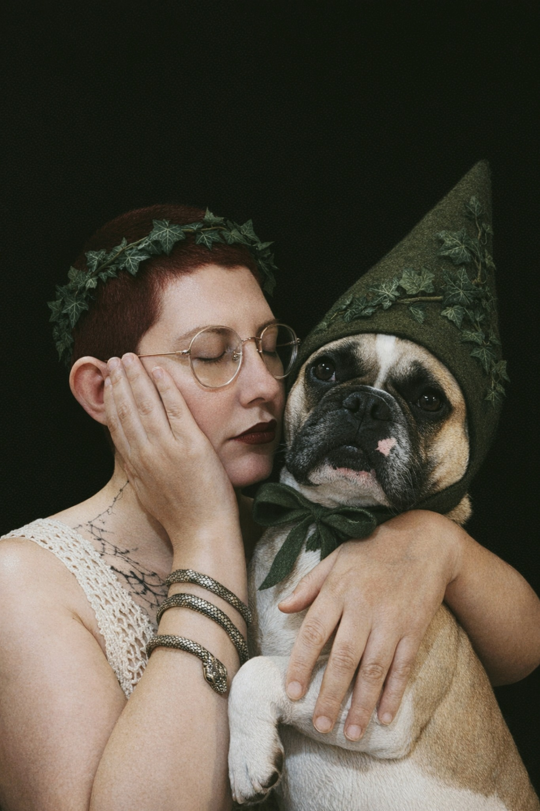

❦
Chi siamo
Alye & Minno

Benvenuti nel nostro mondo!
Siamo Alye (e Minno).
Sono una ragazza di 35 anni, che ha la fortuna di vivere in un posto simile a quelli delle favole con il suo compagno di marachelle.
Autodidatta, mi occupo di illustrazioni e arte visuale come hobby. Il mio non è un lavoro, ma un invito a esplorare la magia che c’è nei boschi delle mie montagne.
Da qualche anno, insieme a Minno, gestisco il nostro blog su Facebook. Ci tengo a ringraziare chiunque ci segua anche lì!
Con affetto, Alye & Minno ♡